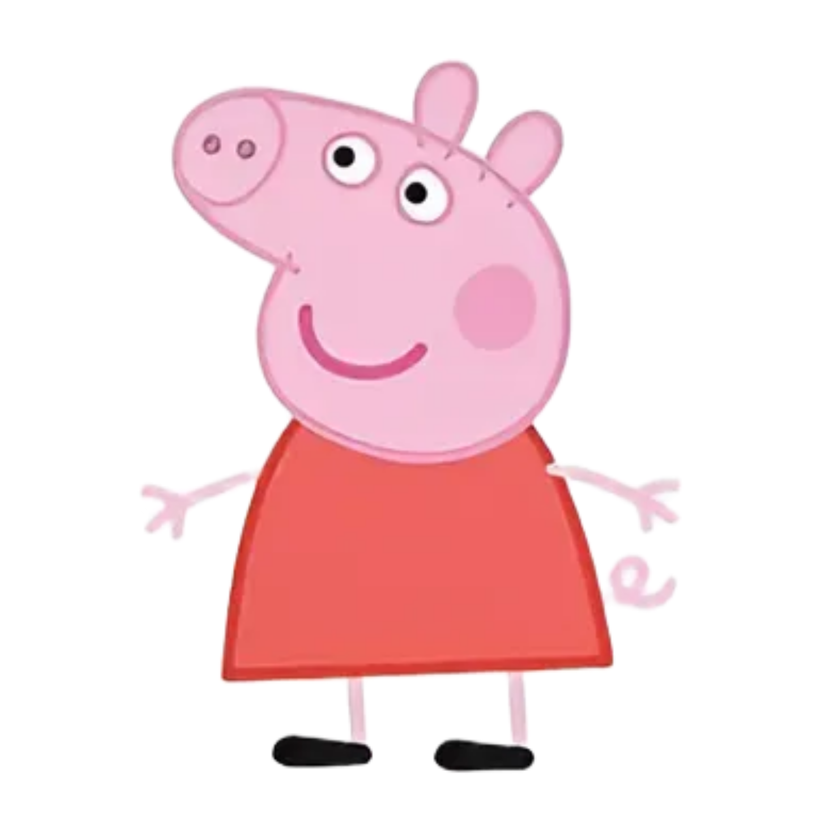
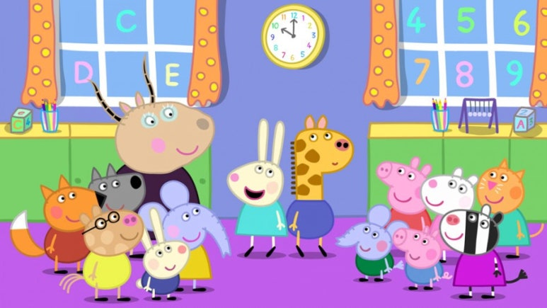

선생님과 함께 오늘 배울 내용을 알아봐요!
이 단원들을 모두 마스터하면페파가 선물을 줄 거예요! ✨
💡 마우스로 아래 사진에서 [시작 버튼], [작업 표시줄 빈 공간], [시계와 날짜]를 찾아 클릭해 보세요!

페파와 친구들이 당신의 실력에 깜짝 놀랐어요!
프로그램을 실행하고 있습니다...이것은 학습용 시뮬레이션입니다! ✨
원하는 단원을 선택하면 페파가 기다리고 있을 거예요! ✨
페파 피그 에디션을 종료하고 있습니다.